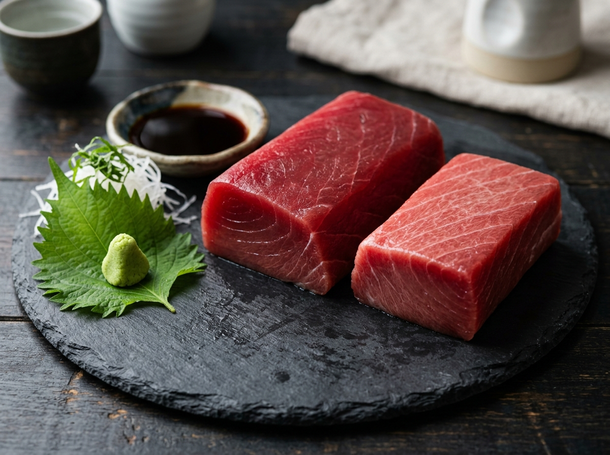
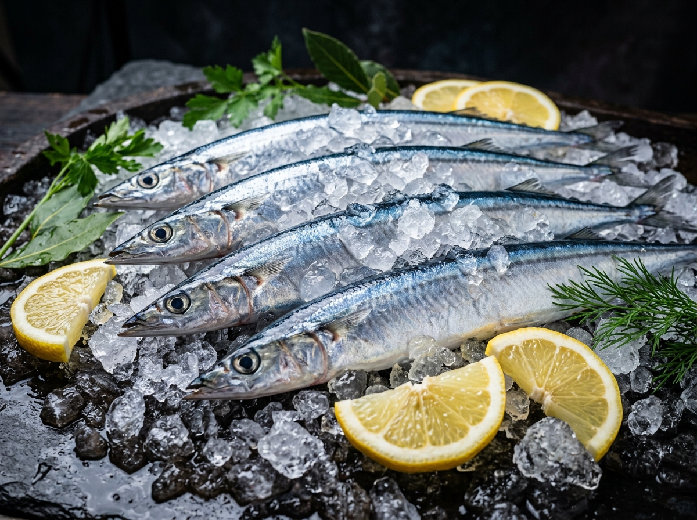
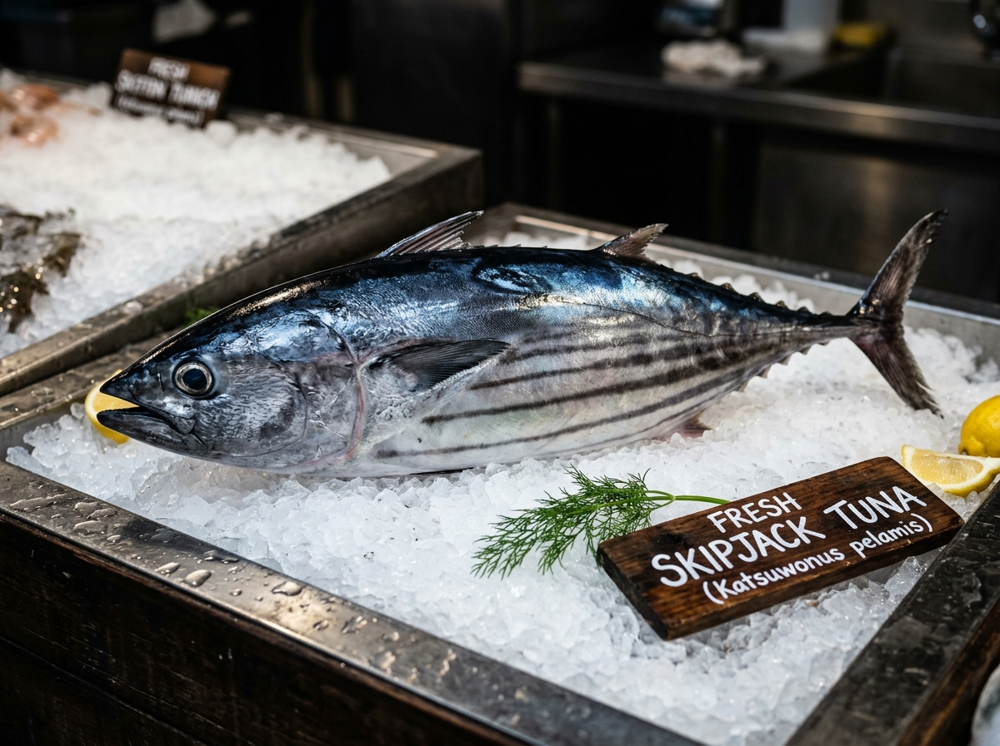

PREMIUM SEAFOOD
三大洋純淨水產・野生極鮮
第一時間急凍鎖鮮，符合日本生食等級與國際頂級餐廳採購標準。

-60°C 刺身級野生黃鰭鮪 / 大目鮪 (Tuna)
捕自三大洋深海，放血處理後幾分鐘內進入 -60°C 極致凍結。肉質緊緻鮮紅、油脂分布完美。
- 產品規格：原條、去內臟、條塊(Saku)
- 溫控控管：-60°C 超低溫
- 主力市場：日本生鮮、高檔餐廳
 純淨野生
純淨野生
遠洋阿根廷魷魚 (Argentine Squid)
捕自西南大西洋純淨海域。魷釣機現釣急凍，口感彈牙鮮甜，為加工外銷與熱炒燒烤之熱門水產。
- 產品規格：單凍原條(WR)、魷魚圈/胴
- 凍結方式：-40°C 板凍與單凍
- 主力市場：亞洲、歐美水產加工廠

富含 Omega-3北太平洋秋刀魚 (Pacific Saury)
夏季集結於北太平洋作業，魚體飽滿、油脂豐厚。富含 DHA 與 EPA，適合鹽烤、蒲燒與大宗外銷。
- 產品規格：特大(1#)、大(2#)、中(3#)
- 凍結方式：船上急凍規格箱裝
- 主力市場：亞洲日式料理、全台量販

圍網優質原料野生正鰹 (Skipjack Tuna)
圍網船隊主力獲捕魚種。新鮮冰溫保存，為國際水產罐頭與柴魚片加工業者之主要原料供應來源。
- 產品規格：原條(Round)、去頭去尾
- 凍結方式：海水冰溫急凍 (-20°C)
- 主力市場：全球罐頭工廠、柴魚加工